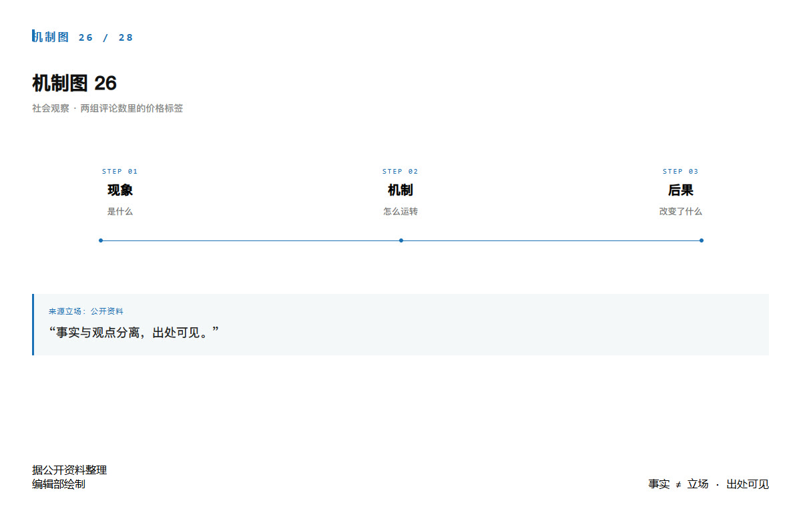

315万和489万，差的不只是数字
社会观察 · 两组评论数里的价格标签
同一件事，祝福和骂声摆在一起，骂声的价码高出一倍。这不是修辞，是两条微博下面真实的数字。
数字来自当年的媒体报道和学术文章，网友的话逐字照抄公开评论汇编。当事人的具体指控一个字都不转述。我只谈数字背后的计价方式，不重判当年的对错。
你点下去的每个赞都不只是「我喜欢」，它同时是一笔账：你在替一种情绪标价，决定它能不能被看见。
截至 2016 年 8 月 27 日，声明微博有 315 万条评论，最热一条 65 万个赞；回应微博有 489 万条评论，最热一条 119 万个赞。
声明收到的是支持，回应收到的是骂声。骂声的评论量是支持的一倍半，点赞量接近两倍。同一个星期，两套数字隔着一整个量级。
声援是温和的动作：点个赞，说句「会好起来的」，然后离开。愤怒带着能量，催人敲字、转发、往下刷。情绪越强，手指越停不下来。
有位网友当年写下困惑：「轻松一句破骂就能赢得二十七万的点赞。这让人有点迷茫。」他发现的不是世道坏，是一个和道理对不上的定价规律。
还有人说：「这很像在拳击沙袋上挂上仇敌照片的人们，那靶子很无辜，幻想中的敌人才是真实的发泄对象。」这类话当时沉在几百万条底下，没人顶。可它说穿了机制：发泄的快感，本身就是互动的燃料。
📌 一个值得记住的数字
愤怒比声援值钱。不是因为骂人的人更多，是因为愤怒天然更容易变成点赞、转发和评论。平台把这种容易，换算成了可见度。
我们以为点赞是在表达认同，可在分发系统里，赞只是一个动作。系统读不出你是祝福、发泄，还是半开玩笑，它只记录手指落下的那一下。
那 119 万个赞让人不安。它们可以是真心的支持，也可以是真心的攻击。但在计数那一刻，两者没有区别。系统的中性，恰恰体现在拒绝分辨动机。
那几百万条评论里，最响的是口号：「宝宝不哭，今夜我们都是绿巨人。」也有自嘲：「有钱也能被绿啊！吓得我不想去赚钱了。」这些话你未必喜欢，但都是当年的真声音。
有人从另一头戳：「自古以来，女人出轨就是天理不容，男人出轨就是全天下男人都会犯的错。成龙被原谅，文章被原谅，陈赫被原谅……道德评判和贞洁观念对女性还是不公平的。」
从那以后，情绪有了明码标价。要让一件事被看见，最省力的办法不是讲清楚，是讲得更让人生气。讲清楚要核对、要前提、要留余地；讲得生气只要一个切口，剩下的交给转发。
热评区里躺着两种人：狂欢的人，和看穿狂欢却只打得出一行字的人。后一种越来越多，也越来越沉默。如果你也属于这一种，至少现在知道：沉默不是没话说，是你那句话不值一个赞。
Roy F. Baumeister 等，2001 年，来源立场：心理学研究
"Bad is stronger than good."
坏比好更有力量。负面信息天然带着更高的唤醒度，平台没有发明这种偏好，只是把它换算成了赞和转发。

▲ 情绪强度如何兑换成可见度（编辑部绘制）
✍️ 你上一次点赞，是喜欢，还是想让更多人看见？
这两个动机常常混在一起，连自己都分不清。评论区说说。觉得有用，点个赞、点个「在看」，转给也会刷到这类热点的人。
下一篇：2018 年 3 月，这套计价规则被正式写进了排序代码。
资料来源
人民网传媒频道《微博的評論轉發功能對群體極化現象的影響》，2016.12（声明与回应两条微博的评论数、点赞数，截至 2016.08.27）。
《Vista看天下》《王宝强婚变冲击波：一场「99亿」级别的全民狂欢》，2016.08.31（事件传播背景）。
网友评论汇编：凤凰网神评辑录、新浪新闻网友汇编、微信公号神评论精选。逐字引用，公共语料，引用不代表本页观点；谩骂内容不予转录。
Roy F. Baumeister 等，《Bad is stronger than good》，Review of General Psychology，2001。立场：心理学研究，非平台方。
社会观察，不站任何性别立场。事实据公开来源，未证实指控不转述、不评价。两种相反解释并列呈现，不替读者选边。拆解规则是为了理解，不是行动指南。